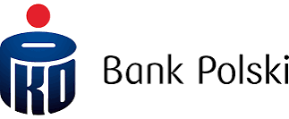
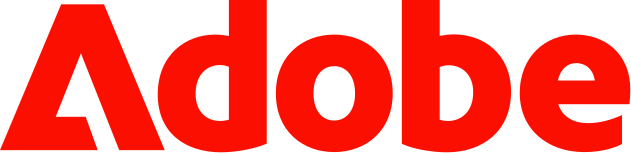
Jedna platforma.
Każdy sygnał.
Od pierwszego kontaktu do trwałej relacji
Pozyskanie · Zaangażowanie · Utrzymanie klienta
PKO Bank Polski · Sierpień 2026
Od pierwszego kontaktu do wieloletniej relacji
Każdy etap relacji wymaga innego podejścia — od skutecznego pozyskania, przez budowanie zaangażowania, po rozpoznanie zmieniających się potrzeb klienta.
Trzy postacie, jedna platforma

Pozyskanie
Zdobądź właściwego klienta
Precyzyjny zasięg z poszanowaniem prywatności → spersonalizowany przekaz → natychmiastowa decyzja i spójna aktywacja w kanałach cyfrowych.
Ewelina Nowak, 41 lat
Kierowniczka ds. marketingu cyfrowego, PKO Bank Polski
Ludzi takich jak Michał.
Michał Kowalski, 38 lat · Kierownik projektu · Warszawa
Znajdź Michała — bez udostępniania danych klientów
RTCDP Collaboration pozwala wykorzystać sygnały partnera bez wymiany danych osobowych czy list klientów. W bezpiecznym środowisku clean room PKO może budować precyzyjne grupy odbiorców i docierać do osób o wysokim potencjale — takich jak Michał.
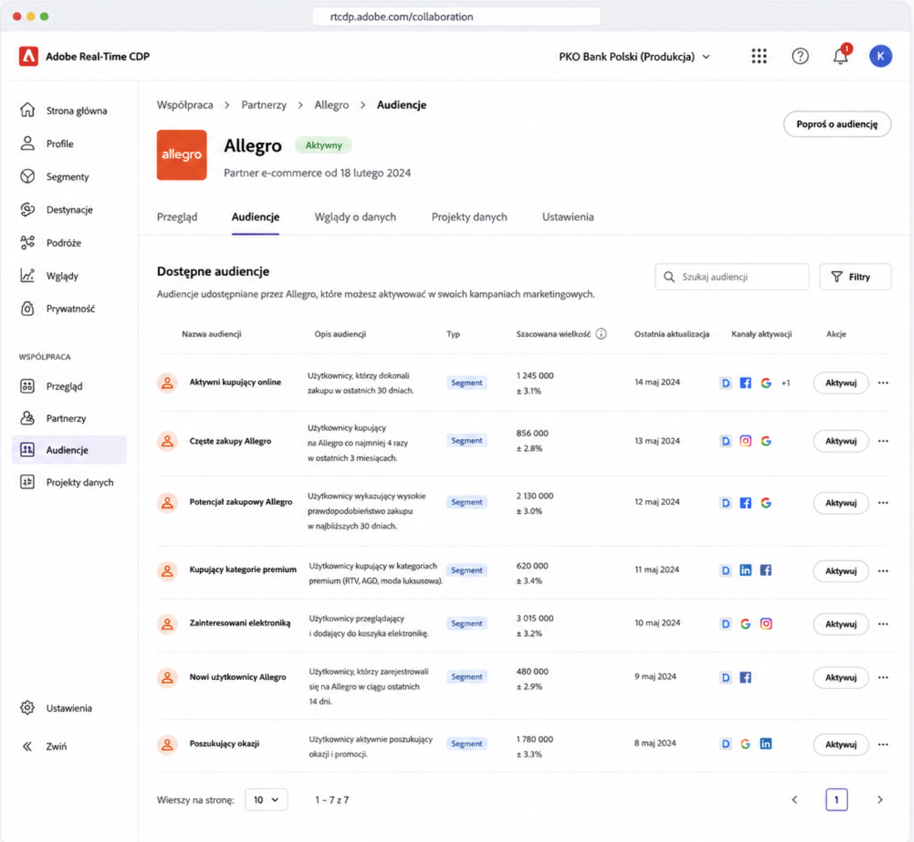
Reklama dopasowana do tego, co już jest dla niego ważne
Michał przegląda Instagram. Wśród kolejnych postów pojawia się oferta PKO Banku Polskiego × Allegro, która odpowiada na jego rzeczywiste zachowanie zakupowe: kupuje online i często wybiera Allegro.
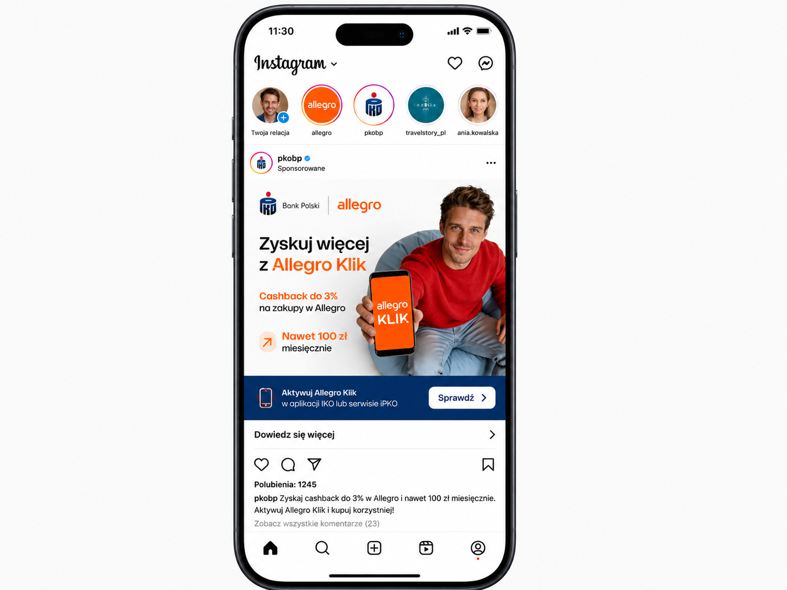
Od reklamy do właściwej oferty — bez utraty kontekstu
Michał klika reklamę i trafia na stronę PKO Banku Polskiego. Kontekst nie znika po przejściu z Meta na kanał własny — strona kontynuuje tę samą historię i rozwija ofertę Allegro Klik.
Michał od razu widzi najważniejsze korzyści i prostą ścieżkę: załóż konto, aktywuj Allegro Klik i zacznij korzystać z cashbacku.
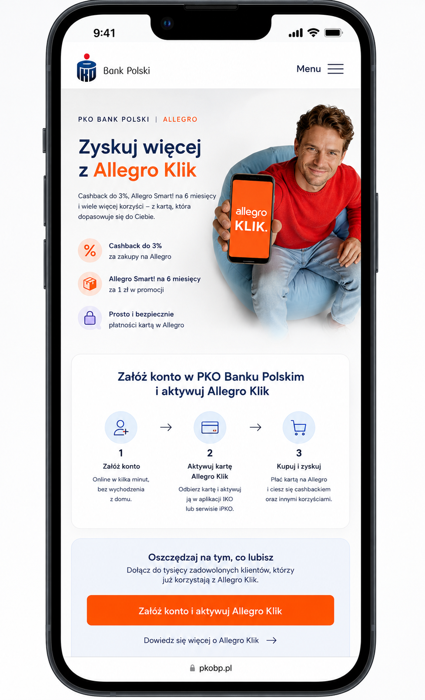
Z anonimowego sygnału powstaje pierwszy profil
PKO nadal nie wie, że to Michał. Po kliknięciu reklamy anonimowa wizyta zostawia jednak pierwsze sygnały: ECID, kontekst kampanii i przynależność do segmentów zakupowych.
Real-Time Customer Profile łączy je w jeden anonimowy profil, który może być wykorzystywany do dalszej personalizacji — jeszcze zanim użytkownik poda swoje dane.
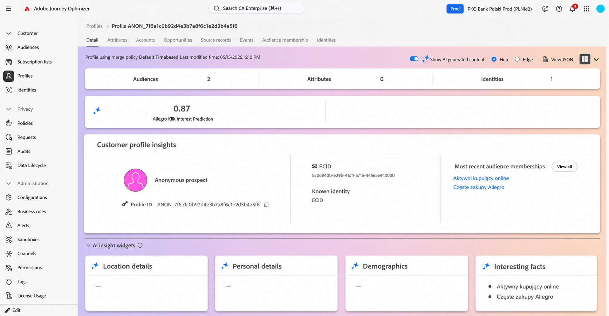
Z anonimowego użytkownika do przyszłego klienta
Michał klika "Załóż konto" i rozpoczyna wniosek na telefonie. Jeszcze chwilę temu był dla PKO anonimowym profilem — teraz zaczyna podawać dane, które pozwolą połączyć jego dotychczasową ścieżkę z przyszłym profilem klienta.
Reklama na Instagramie → landing → rozpoczęcie wniosku to jedna ciągła historia. Kontekst, który doprowadził Michała do oferty Allegro Klik, nie znika w momencie rozpoczęcia formularza.
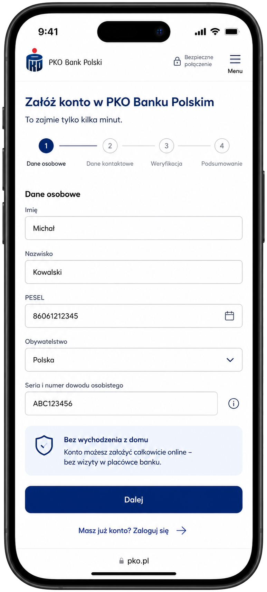
Konto otwarte. Relacja dopiero się zaczyna.
Michał kończy wniosek na telefonie i od razu widzi potwierdzenie: konto w PKO Banku Polskim zostało otwarte, a Allegro Klik jest aktywny. Anonimowy profil staje się rozpoznanym klientem — z zachowaniem kontekstu wcześniejszej ścieżki od reklamy i landingu aż po konwersję.
To jednak nie koniec journey. W momencie, gdy Michał staje się klientem, zmienia się również kolejna najlepsza akcja. Zamiast ponownie promować Allegro Klik, Experience Decisioning proponuje pobranie IKO — naturalny następny krok, który przenosi nową relację do kanału własnego PKO.
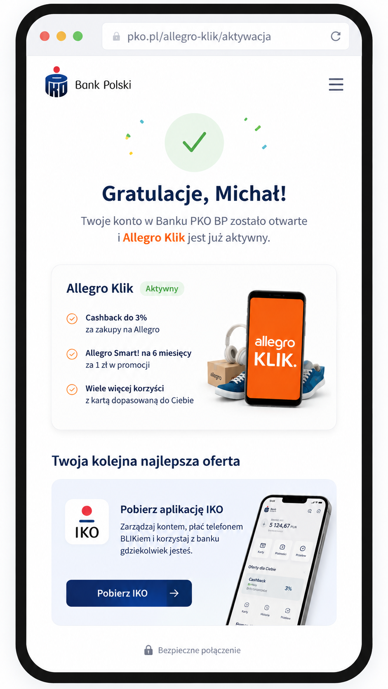
Potwierdzenie trafia tam, gdzie Michał do niego wróci
Chwilę po otwarciu konta Michał otrzymuje e-mail z potwierdzeniem. W jednym miejscu ma najważniejsze informacje: konto jest aktywne, Allegro Klik gotowy do użycia, a korzyści są dostępne od początku relacji z PKO.
Komunikacja nie kończy się jednak na potwierdzeniu. E-mail kontynuuje kolejny najlepszy krok wybrany wcześniej dla Michała — zachęca do pobrania IKO, żeby nowy klient od razu przeniósł codzienną relację z bankiem do kanału własnego.
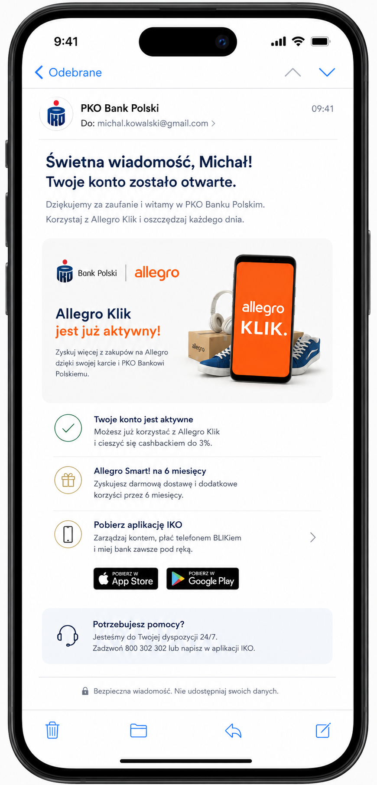
Kolejny krok przychodzi do Michała
Michał nie musi wracać do e-maila ani ponownie szukać informacji. RCS pojawia się bezpośrednio na jego telefonie i potwierdza najważniejsze elementy: konto jest otwarte, Allegro Klik aktywny, a kolejnym krokiem jest pobranie IKO.
Ta sama rekomendacja, którą Michał zobaczył na ekranie sukcesu i w e-mailu, trafia teraz do kanału, który pozwala zareagować od razu. Jedno dotknięcie prowadzi bezpośrednio do pobrania aplikacji.
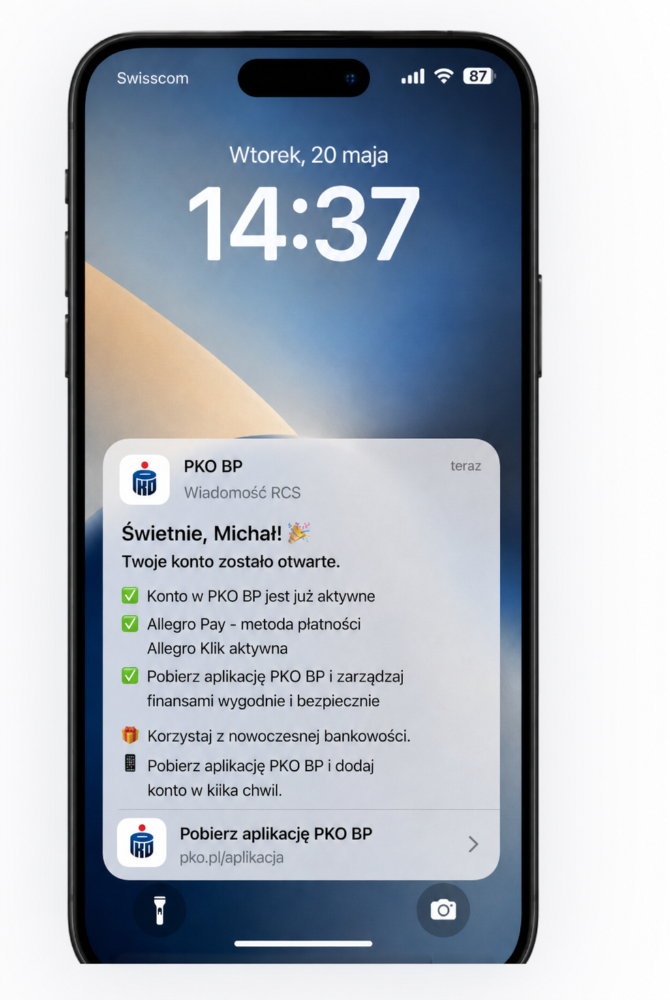
Pełny obraz Michała
Po identyfikacji wszystkie dotychczasowe sygnały łączą się w jeden profil klienta — od wcześniejszych interakcji i przynależności do grup odbiorców po dane produktowe i aktywność w kanałach PKO: 6 segmentów, 18 atrybutów, 6 tożsamości w jednym Identity Graph.
Bank widzi już nie pojedyncze interakcje, ale pełny kontekst Michała, który może wykorzystać przy kolejnej decyzji — jak segment Klienci bez wpływu wynagrodzenia ze score 87% Likelihood to Engage dla oferty "Przeniesienie wynagrodzenia".
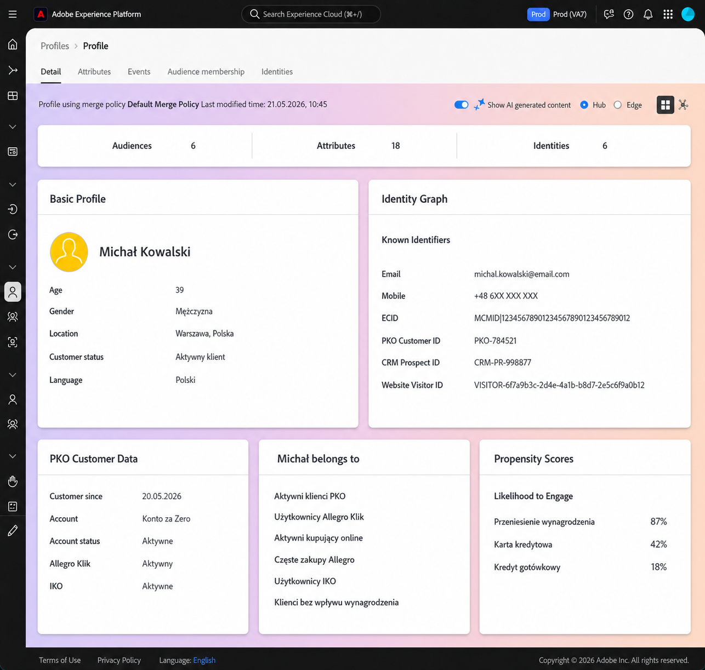
Dopasuj doświadczenie od pierwszego dnia
Michał po raz pierwszy otwiera IKO. Nie ma jeszcze historii transakcji, ale jego profil zawiera już sygnały z wcześniejszych interakcji. Experience Decisioning wykorzystuje ten kontekst, aby od pierwszej wizyty dobrać najbardziej trafną ofertę.
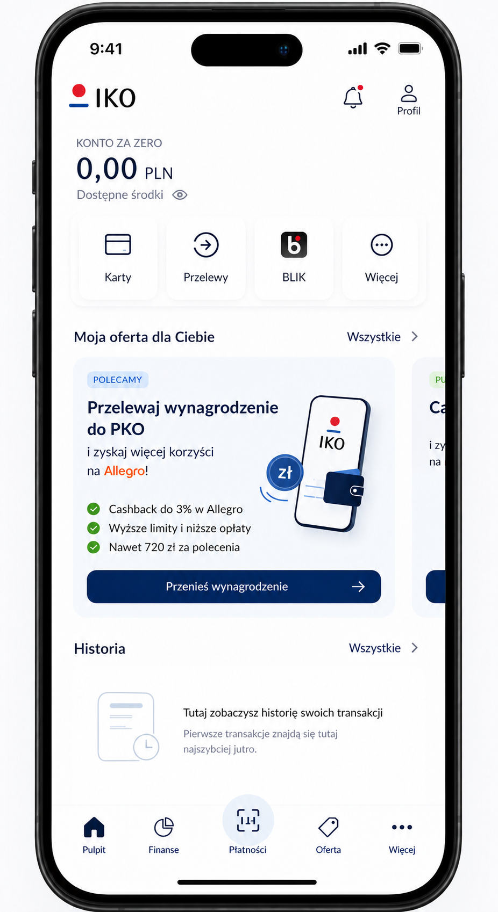
Michał zmienia kanał. Kontekst zostaje.
Po pierwszej wizycie w IKO Michał loguje się do serwisu internetowego. Nie zaczynamy od zera — jego profil, wcześniejsze interakcje i kontekst są dostępne również tutaj. Experience Decisioning wykorzystuje je do wyboru kolejnego najlepszego doświadczenia.
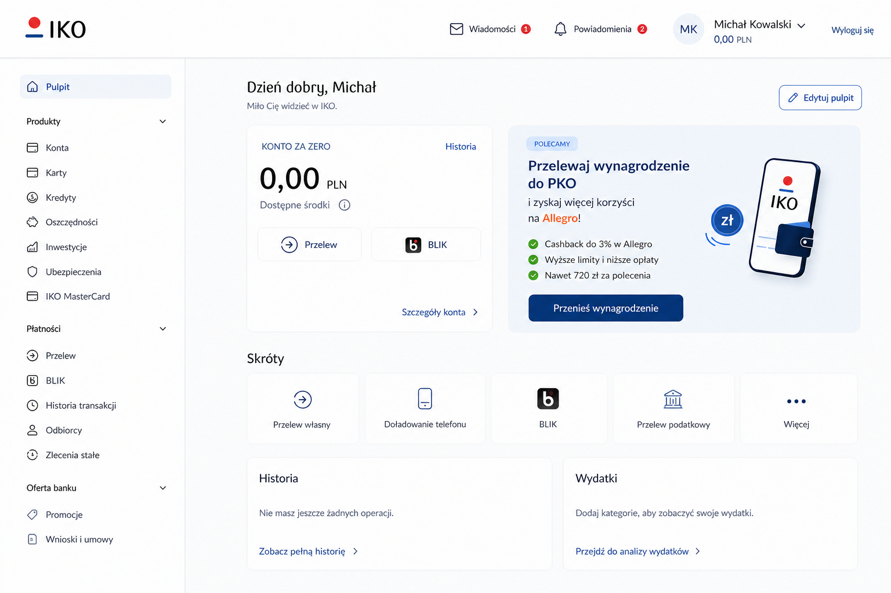
Nie płać ponownie za pozyskanego klienta
Michał został klientem — kampanie akwizycyjne przestają być dla niego aktywne. Jednocześnie jego profil zasila grupę klientów o podobnych cechach, pomagając znaleźć kolejnych wartościowych odbiorców.
RTCDP · Destinations
Utrzymanie klienta
Rozpoznaj zmianę. Reaguj właściwie.
Michał pokazał, jak rozpocząć właściwą relację. Historia Zofii pokazuje, jak ją utrzymać, gdy potrzeby klienta zaczynają się zmieniać.
Zofia Wiśniewska, 34 lata
Kierowniczka ds. marketingu · Warszawa
Jej życie się zmieniło — przekaz nie
Mężatka · Mała córka · Warszawa
Trafność — nie niezadowolenie
Bogaty profil Zofii: 7 audiencji, 24 atrybuty. Wciąż należy do segmentów Moda i lifestyle i Restauracje i gastronomia z 2021 roku — dlatego marketing wciąż wysyłał te kampanie. Ale Propensity Scores mówią co innego: Oferta rodzinna 81% Likelihood to Engage, dużo wyżej niż Konto oszczędnościowe (68%) czy zwiększenie limitu karty (37%). W tej kategorii kryją się dwie różne oferty: szybki rabat na zakupy codzienne — najniższy próg, najszybsza reakcja — i, jako naturalny krok dalej, ubezpieczenie na życie. Młoda mama, mąż, kredyt hipoteczny. Niewłaściwy przekaz przez dwa lata — dane już znały odpowiedź.
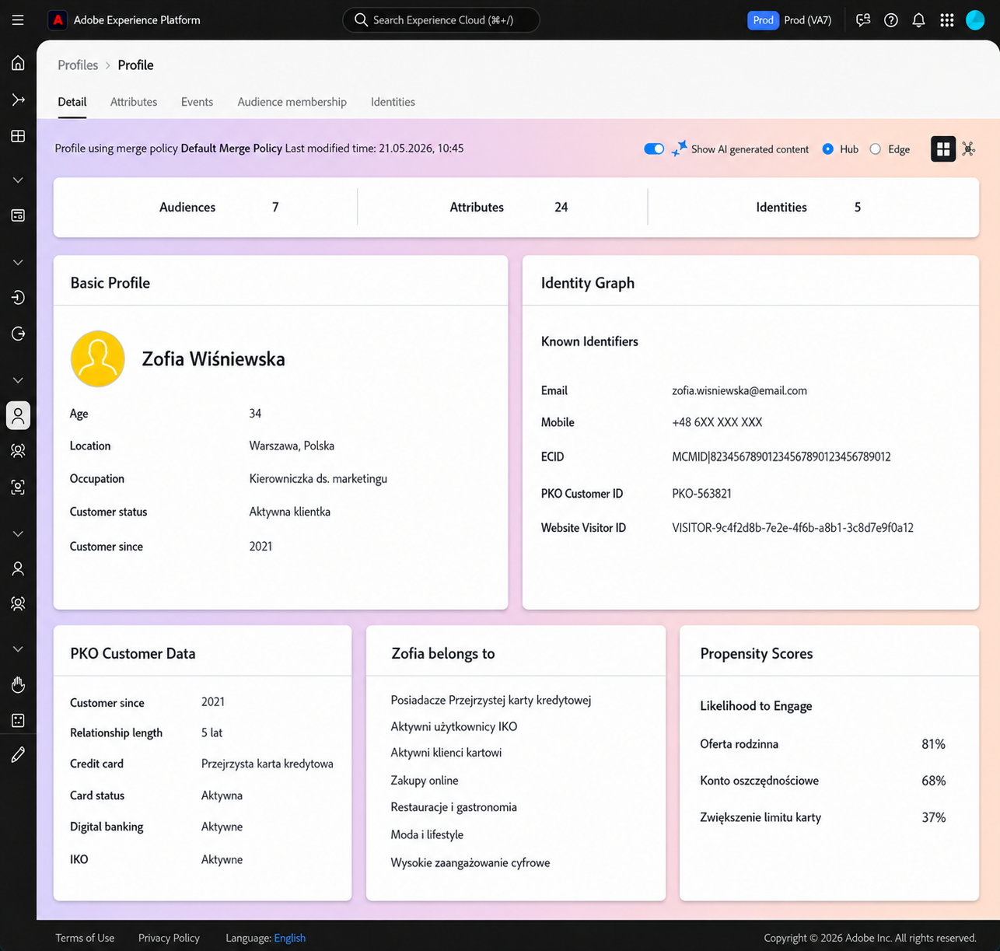
Wykryta zmiana etapu życia
Ewelina nie klika przez kreator reguł — opisuje segment własnymi słowami w CX Coworker: spadek liczby i wartości transakcji kartą, rzadsze korzystanie z IKO, brak reakcji na e-maile i oferty w ostatnich 90 dniach. Zofia Wiśniewska jest w tej audiencji — mężatka, młoda mama, wydatki przeniosły się z mody na zakupy spożywcze. Wciąż klientka. Tylko nie ta sama, do której PKO mówiło.
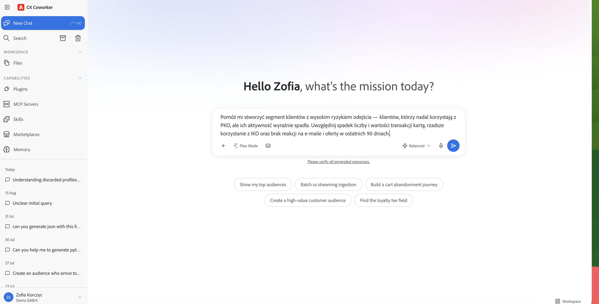
Kto dostaje jaką ofertę
Ewelina buduje kampanię odzyskania dla audiencji wysokiego ryzyka — kilka ofert gotowych: rabat na zakupy codzienne (Rossmann), ubezpieczenie na życie jako cross-sell, ubezpieczenie dziecka. Nie wybiera dla każdej osoby osobno — robi to Experience Decisioning. Dla Zofii pierwsza jest zniżka w Rossmannie (0.91) — niski próg, szybka reakcja, prosty sposób, by wróciła. Ubezpieczenie na życie idzie od razu za nią, jako naturalny kolejny krok. Moda i lifestyle zostają wyciszone.
Jedna ścieżka. Każdy klient dostaje własną drogę powrotu.
Ewelina uruchamia jeden journey odzyskania dla klientów z wysokim ryzykiem odejścia. AJO wykorzystuje wybraną przez Experience Decisioning ofertę i prowadzi każdego klienta kolejnym najlepszym krokiem — w zależności od tego, czy otworzył wiadomość, zareagował na ofertę czy nadal pozostaje nieaktywny.
E-mail, SMS i kanały własne działają jako jedna spójna rozmowa, a nie osobne kampanie.
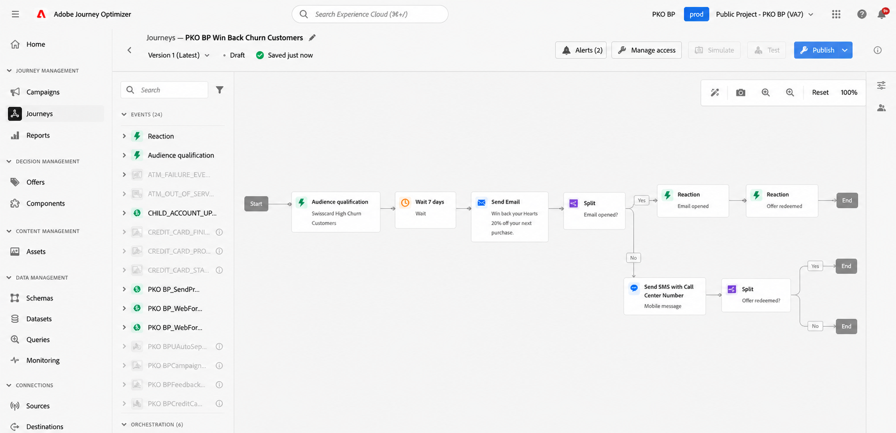
Najpierw powód, żeby wrócić. Potem więcej wartości.
Zofia otrzymuje komunikację dopasowaną do jej aktualnych potrzeb. Experience Decisioning wybiera na początek prostą, natychmiastową korzyść — 10% zniżki w Rossmannie. To oferta, która ma odbudować jej zaangażowanie bez kolejnej generycznej promocji.
W tej samej komunikacji PKO pokazuje też rozwiązania, które mogą być przydatne na kolejnych etapach życia — ubezpieczenie życia i zdrowia oraz ubezpieczenie dziecka.
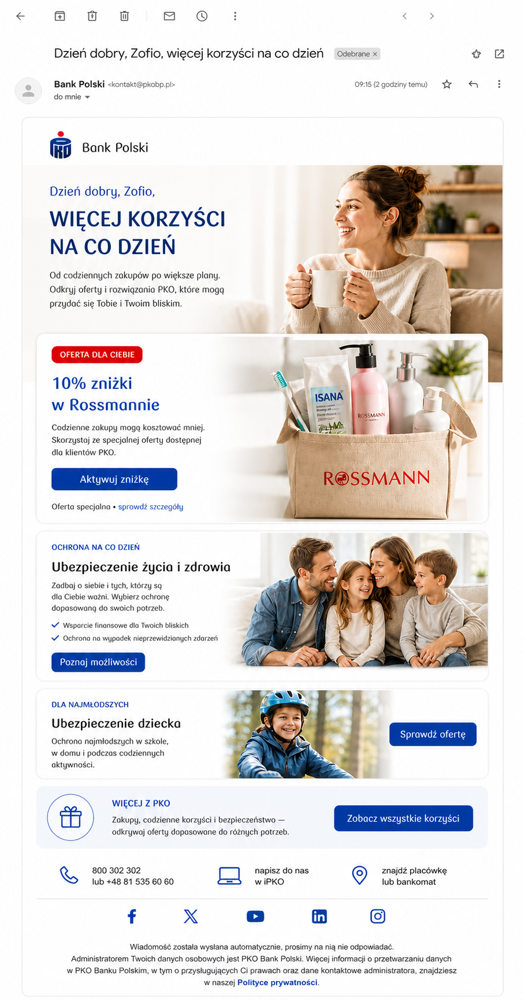
Ta sama oferta. Teraz od razu w IKO.
Zofia widzi w IKO tę samą ofertę, którą wcześniej otrzymała e-mailem — 10% zniżki w Rossmannie. Nie musi jej ponownie szukać ani przechodzić przez kolejną kampanię.
Spójne decisioning działa między kanałami, a w aplikacji Zofia może od razu aktywować rabat i z niego skorzystać.
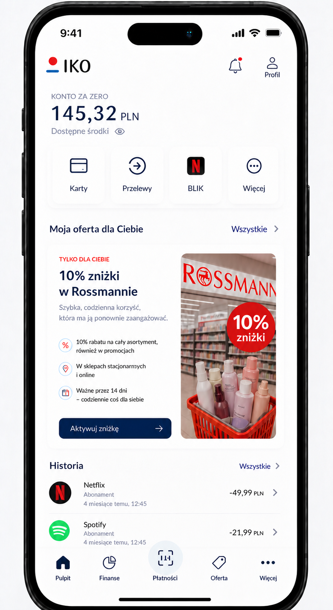
Aktywowała. Teraz po prostu korzysta.
Zofia aktywuje rabat w IKO, a journey reaguje natychmiast. Push potwierdza, że 10% zniżki w Rossmannie jest już aktywne i przypomina, że szczegóły korzyści są zawsze dostępne w aplikacji.
To nie kolejna kampania ani kolejna oferta. To domknięcie doświadczenia rozpoczętego w e-mailu — od właściwej rekomendacji, przez aktywację, po realną korzyść dla klientki.
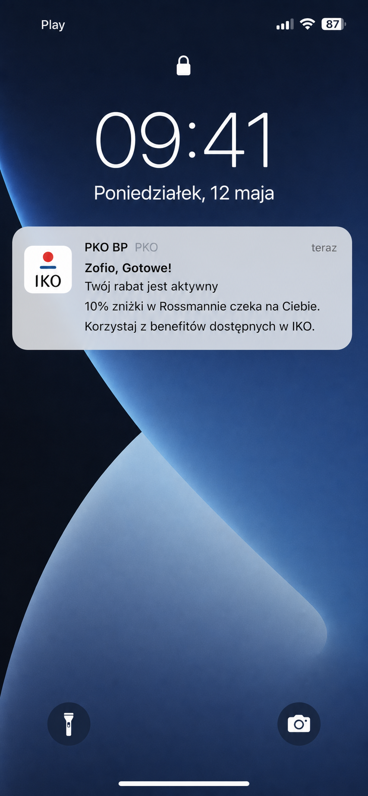
Jedna platforma. Dwie historie. Jeden spójny profil klienta.
Michał pozyskany dzięki współpracy z Allegro — od anonimowego profilu do klienta PKO. Zofia odzyskana dzięki wykryciu zmiany zachowania, właściwej ofercie i spójnemu doświadczeniu między e-mailem a IKO. Dwie historie, jedna platforma i jedna marketerka.
- Zintegrowane profile — od anonimowego prospecta do pełnego profilu klienta w czasie rzeczywistym
- Spójna personalizacja między kanałami — ta sama decyzja i kontekst w e-mailu, webie i IKO
- Privacy-safe Collaboration — wykorzystanie sygnałów Allegro bez udostępniania danych klientów
- Journey orchestration — kolejne kroki reagują na zachowanie klienta, zamiast realizować sztywną kampanię
- Segmentacja wspierana przez AI — od pozyskania po automatyczne wykrywanie klientów z ryzykiem odejścia
- Aktywacja i reakcja w czasie rzeczywistym — od rekomendacji przez aktywację po potwierdzenie push
- Experience Decisioning — najlepsza kwalifikująca się oferta wybierana dla konkretnego klienta
- Jedna marketerka, jeden workflow — Ewelina prowadzi acquisition i retention bez przełączania się między silosami